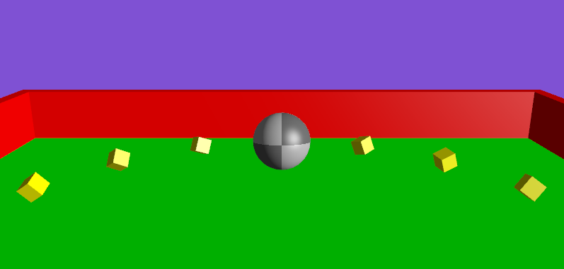
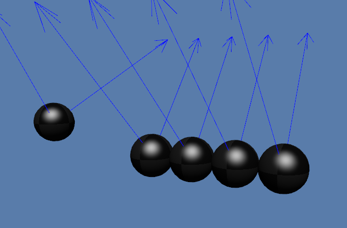
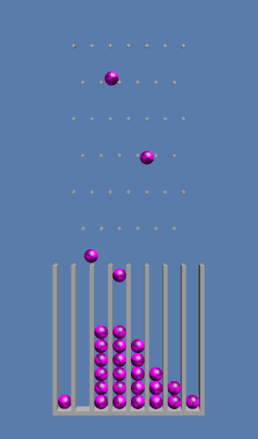
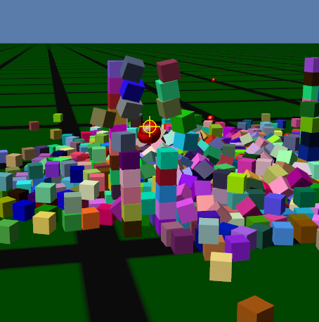
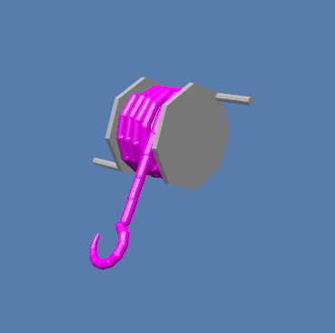

An overview of the demo applications
Demo applications are provided to showcase certain features of Jolt JNI. The following demos are found in the com.github.stephengold.sportjolt.javaapp.demo package of the Sport-Jolt "java-apps" sub-project:
-
MarbleGamedemonstrates compound shapes and sensor bodies
 -
NewtonsCradledemonstrates dynamic restitution and distance constraints
 -
Pachinkodemonstrates compound shapes and 2-D physics
 -
ThousandCubesdemonstrates stacking cubes and launching projectiles
 -
Windlassdemonstrates rope simulation using rigid bodies

User interface
The demos are controlled primarily by keyboard input.
| The descriptions below assume a keyboard with the "US" (QWERTY) layout. On keyboards with other layouts, the keys may be labeled differently. |
For convenience, the mapping of keys to actions is partly standardized. In most demo apps:
-
. and Pause toggle the simulation between running and paused,
-
C dumps the camera’s position to the console, and
-
Esc ends the application.
For camera control,
all demos except MarbleGame and ThousandCubes use DragLMB rotation mode.
This means you can rotate the camera
by dragging the mouse with its left button depressed.
Furthermore:
-
W and S dolly the camera forward and back, respectively,
-
A and D dolly the camera left and right, respectively,
-
Q raises the camera, and
-
Z lowers the camera.
Additional mappings are specific to each application:
-
In
MarbleGame:-
W pushes the marble away from the viewer,
-
S pushes the marble towards the viewer,
-
A push the marble to the viewer’s left, and
-
D pushes the marble to the viewer’s right.
-
-
In
NewtonsCradle:-
F1, 1, and Numpad1 restart with a single ball
-
F2, 2, and Numpad2 restart with 2 balls
-
F3, 3, and Numpad3 restart with 3 balls
-
F4, 4, and Numpad4 restart with 4 balls
-
F5, 5, and Numpad5 restart with 5 balls
-
-
In
Pachinko:-
F4, 4, and Numpad4 restart with 4 rows of pins
-
F5, 5, and Numpad5 restart with 5 rows of pins
-
F6, 6, and Numpad6 restart with 6 rows of pins
-
F7, 7, and Numpad7 restart with 7 rows of pins
-
F8, 8, and Numpad8 restart with 8 rows of pins
-
F9, 9, and Numpad9 restart with 9 rows of pins
-
-
In
ThousandCubes:-
E launch a red ball
-
-
In
Windlass:-
Down arrow turn the barrel counter-clockwise
-
Up arrow turn the barrel clockwise
-